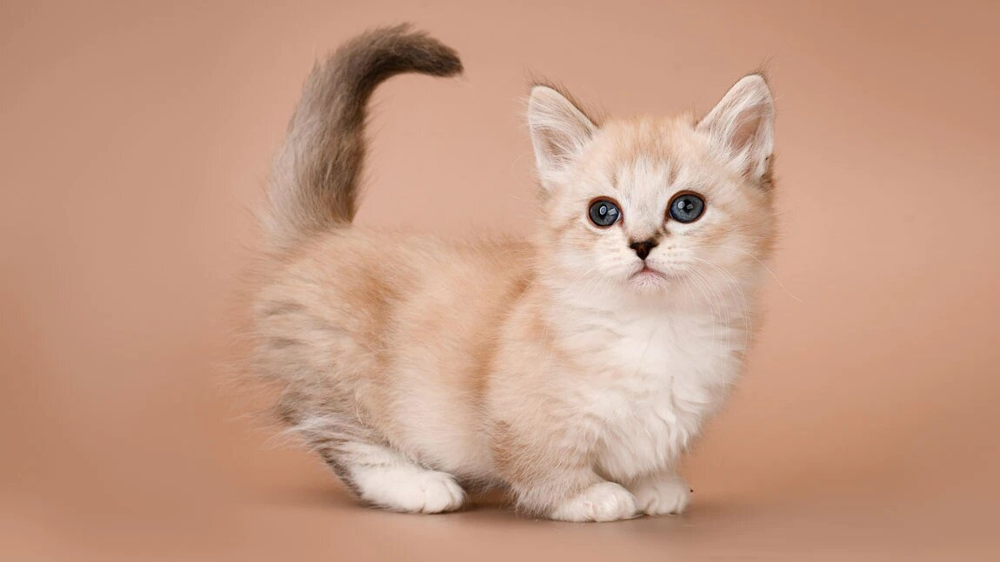

Породы котиков
1. Абиссинская кошка
 Эта порода, выведенная в Великобритании, — одна из самых древних в мире. Её прародители были родом из Африки и Юго-Восточной Азии. За интересную экзотическую внешность, напоминающую животных с древнеегипетских фресок, и сияющий окрас их иногда называют «солнечными».
Породными признаками являются непропорционально большие острые широко расставленные уши и гладкая шерсть. Всё это можно видеть на фото.
Признаются 4 вида окраса:
-дикий — насыщенный оранжево-коричневый цвет;
-cоррель (цвет корицы) — абрикосовый, медный, красно-коричневый, кирпично-коричневый, шоколадный оттенок (наличие каких-либо пятен, вкраплений, чёрных волосков считается дефектом);
-голубой — необычный и интересный серо-голубой цвет с рыжим тоном;
-фавн — цвет шампань, нежный бежево-розоватый, молочно-кофейный оттенок.
Характерной особенностью абиссинов считается тикинг — сегментированный окрас шерсти.
Эта порода, выведенная в Великобритании, — одна из самых древних в мире. Её прародители были родом из Африки и Юго-Восточной Азии. За интересную экзотическую внешность, напоминающую животных с древнеегипетских фресок, и сияющий окрас их иногда называют «солнечными».
Породными признаками являются непропорционально большие острые широко расставленные уши и гладкая шерсть. Всё это можно видеть на фото.
Признаются 4 вида окраса:
-дикий — насыщенный оранжево-коричневый цвет;
-cоррель (цвет корицы) — абрикосовый, медный, красно-коричневый, кирпично-коричневый, шоколадный оттенок (наличие каких-либо пятен, вкраплений, чёрных волосков считается дефектом);
-голубой — необычный и интересный серо-голубой цвет с рыжим тоном;
-фавн — цвет шампань, нежный бежево-розоватый, молочно-кофейный оттенок.
Характерной особенностью абиссинов считается тикинг — сегментированный окрас шерсти.
2.Ангорская кошка
 Белоснежные длинношёрстные коты были завезены из Турции, поэтому их называют турецкой ангорой. Сейчас животные со снежно-белым окрасом (как на фото) — большая редкость, чаще всего встречаются особи с бело-серой или бело-рыжей шерстью. Характерные особенности:
раскосые глаза, которые бывают разного цвета, например, жёлтого и голубого;
близко расположенные ушки с заострёнными кончиками;
пушистый хвост, по форме напоминающий страусиное перо;
длинная, немного волнистая шерсть без подшёрстка.
Классический окрас — белый, но в некоторых странах мира чистокровными признают котов других расцветок, кроме шоколадного и лилового оттенков. У породистых ангорок цвет шерсти гармонирует с цветом подушечек лап. У белых они розовые, а у чёрных — коричневые или чёрные. Помимо однотонных, встречаются животные, у которых шерсть «расписана» интересными узорами.
Белоснежные длинношёрстные коты были завезены из Турции, поэтому их называют турецкой ангорой. Сейчас животные со снежно-белым окрасом (как на фото) — большая редкость, чаще всего встречаются особи с бело-серой или бело-рыжей шерстью. Характерные особенности:
раскосые глаза, которые бывают разного цвета, например, жёлтого и голубого;
близко расположенные ушки с заострёнными кончиками;
пушистый хвост, по форме напоминающий страусиное перо;
длинная, немного волнистая шерсть без подшёрстка.
Классический окрас — белый, но в некоторых странах мира чистокровными признают котов других расцветок, кроме шоколадного и лилового оттенков. У породистых ангорок цвет шерсти гармонирует с цветом подушечек лап. У белых они розовые, а у чёрных — коричневые или чёрные. Помимо однотонных, встречаются животные, у которых шерсть «расписана» интересными узорами.
3.Бомбейская кошка

 Посмотрите на фото: бомбейские коты поражают фантастической красотой — это чёрные как смоль животные с короткой, гладкой и блестящей шерстью. Внешне они очень похожи на диких пантер: пронзительный взгляд, глаза янтарно-медного цвета с чёрными зрачками, «лакированная» шерсть, спокойная, грациозная поступь.
Если вам захочется продемонстрировать своего красивого питомца чужим людям, учитывайте, что эти животные могут быть очень щепетильны в своих чувствах. Нет никакой гарантии, что с незнакомцами они станут вести себя так же приветливо и дружелюбно, как с членами вашей семьи.
Посмотрите на фото: бомбейские коты поражают фантастической красотой — это чёрные как смоль животные с короткой, гладкой и блестящей шерстью. Внешне они очень похожи на диких пантер: пронзительный взгляд, глаза янтарно-медного цвета с чёрными зрачками, «лакированная» шерсть, спокойная, грациозная поступь.
Если вам захочется продемонстрировать своего красивого питомца чужим людям, учитывайте, что эти животные могут быть очень щепетильны в своих чувствах. Нет никакой гарантии, что с незнакомцами они станут вести себя так же приветливо и дружелюбно, как с членами вашей семьи.
4.Корниш-рекс
На фото видно, насколько это интересные коты. Их внешность так далека от классических стандартов, что их можно принять за неземных существ. По телосложению корниш-рекс похож на борзую собаку — гибкое, мускулистое длинное тело, высокие лапы, длинный хлыстоподобный хвост. Тем не менее в изяществе ему не отказать. Чего стоит одна только густая, короткая, слегка кучерявая шерсть. На фоне худощавого тела и маленькой головы уши корниш-рекса выглядят огромными.
Наиболее интересно и экстравагантно смотрятся кошечки с окрасом колорпойнт. Он похож на окрас сиамов, поэтому породу назвали си-рекс. Животные с красивой белоснежной шерстью и разноцветными глазами — большая редкость, но, увидев их однажды, не забудешь никогда.
5.Манчкин

В 1991 году эти красивые коротконогие котики с бархатистой плотной шубкой, представленные на выставке в Мэдисон Сквер Гарден, потерпели полное фиаско. Карликовый рост посчитали дефектом, но после того как учёными было доказано, что короткие ноги — это естественный генетический признак, порода манчкин была признана официально. Сегодня она очень популярна и легко узнаётся по фото.
Милые котята манчкинов способны растопить сердце любого. Взрослые особи демонстрируют отменное здоровье на протяжении всей жизни, а живут они 15—16 лет.
Интересные и необычные манчкины — прекрасные модели для эффектных фотосессий. Особый интерес вызывают коты с шерстью цвета шоколада. Окрас трёхцветных манчкинов полностью лишён какой-либо симметрии, но на их очарование подобный «диссонанс» никак не повлиял.
6.Рэгдолл
 Если бы не живой взгляд и игривость, рэгдолла легко можно было принять за дорогую мягкую игрушку. На фото видны все признаки этих котов: ярко голубые глаза, шелковистая длинная шерсть (растёт также между пальчиками на лапках), интересные «воротничок» и «штанишки». Природа сотворила такое красивое животное, что им просто нельзя не восхищаться.
У рэгдолла интересные цвета окраса: лиловый, голубой, шоколадный. Оттенки варьируются в разных комбинациях.
Неудивительно, что котики с такой внешностью прекрасно живут в семье, становятся верными друзьями на всю жизнь. Дети часто рассматривают кошку породы рэгдолл как безмолвную игрушку. Чтобы животное не нервничало, лучше сразу объяснить деткам, что оно не потерпит неуважительного отношения.
Если бы не живой взгляд и игривость, рэгдолла легко можно было принять за дорогую мягкую игрушку. На фото видны все признаки этих котов: ярко голубые глаза, шелковистая длинная шерсть (растёт также между пальчиками на лапках), интересные «воротничок» и «штанишки». Природа сотворила такое красивое животное, что им просто нельзя не восхищаться.
У рэгдолла интересные цвета окраса: лиловый, голубой, шоколадный. Оттенки варьируются в разных комбинациях.
Неудивительно, что котики с такой внешностью прекрасно живут в семье, становятся верными друзьями на всю жизнь. Дети часто рассматривают кошку породы рэгдолл как безмолвную игрушку. Чтобы животное не нервничало, лучше сразу объяснить деткам, что оно не потерпит неуважительного отношения.